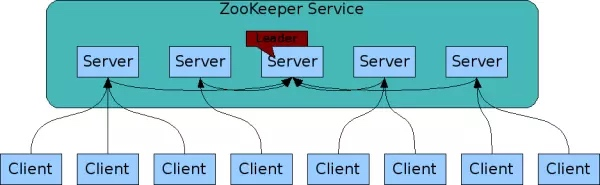
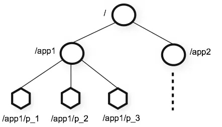
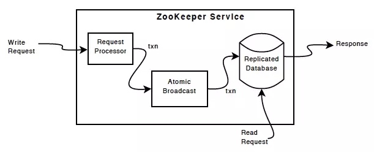
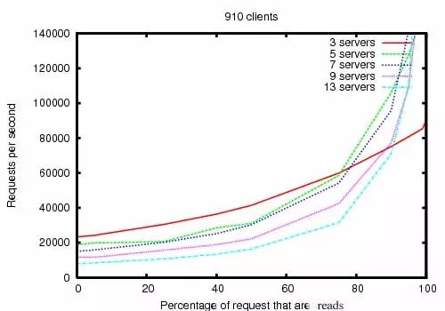
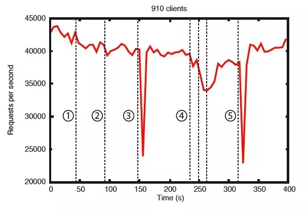

Zookeeper 总览
https://juejin.im/post/5a3b542d6fb9a0452725c25f
翻译自 Zookeeper 官方网站 Release 3.4.11 版本
Zookeeper
Zookeeper: 一个为分布式应用设计的分布式协调服务
ZooKeeper 是一款开源的分布式应用的分布式协调服务。它包含一个简单的原语集，分布式应用程序可以基于它实现同步服务，配置维护和命名服务等。Zookeeper 设计很容易进行编程，它使用一种类似于文件系统的目录树结构的数据模型，以 java 方式运行，有 java 和 c 的绑定 (binding)。
协调服务是非常难以被正确实现的。他们特别容易产生诸如竞态条件、死锁等错误。ZooKeeper 背后的动机是为分布式应用程序减轻从零开始实现协调服务的难度。
设计目标
Zookeeper 是非常简单的。
ZooKeeper 允许分布式进程通过与标准文件系统类似组织的共享层级命名空间来相互协调。命名空间被称为znode的数据记录组成，用 ZooKeeper 的说法，这些记录和标准文件系统中的文件和目录非常相似。与典型的用于存储的文件系统不同，ZooKeeper 数据保存在内存中，这意味着 ZooKeeper 可以实现高吞吐量和低延迟。
Zookeeper 的实现着重于高性能、高可用性和严格的顺序访问。ZooKeeper 的性能方面意味着它可以用于大型分布式系统。可靠性方面使它不会造成单点故障。严格的排序意味着可以在客户端实现复杂的同步原语。
Zookeeper 是复制的（replicated）
就像它协调的分布式进程一样，Zookeeper 自身也在被称为 “ensemble” 的一组主机之间进行复制。

组成 Zookeeper 服务 (Service) 的每个服务器 (server) 之间都必须相互了解对方。他们维护一个内存状态图，以及一个持久存储的事务日志和快照。只要这些服务器 (servers) 中大多数是可用的，整个 ZooKeeper 服务就是可用的。
客户端 (client) 连接到任意一台 ZooKeeper 服务器。客户端维护一个 TCP 连接，通过它发送请求、获取响应、获取监视事件以及发送心跳。如果到服务器的 TCP 连接中断，客户端将连接到其他不同的服务器。
Zokeeper 是有顺序的
ZooKeeper 使用反映所有 ZooKeeper 事务顺序的数字来标记每个更新。后续操作可以使用该次序来实现更高级别的抽象，例如同步原语。
ZooKeeper 是快速的
在应对以 “读” 为主的负载时尤其地快速。ZooKeeper 应用程序在数千台机器上运行，并且在读取比写入更为普遍的情况下，性能表现最佳，比例约为 10：1。
Zookeeper 数据模型和层级命名空间
ZooKeeper 提供的命名空间与标准文件系统非常相似。路径是由斜杠/分隔的一系列元素。 ZooKeeper 命名空间中的每个节点都由一个路径标识。

Zookeeper默认节点和临时节点
与标准文件系统不同的是，ZooKeeper 命名空间中的每个节点都可以拥有与其相关的数据以及子节点。这就像一个文件系统中可以存在一个文件或一个目录。ZooKeeper 被设计用来存储相关的协调数据，如状态信息、配置、位置信息等等，所以每个节点上存储的数据通常都很小，在字节 (byte) 到千字节 (kb) 范围内。我们使用术语 znode 来清楚地说明我们正在讨论 ZooKeeper 数据节点。
Znode 维护了一个状态 (stat) 结构，其中包含了表示数据改变、访问控制列表（ACL）改变的版本号、时间戳，可用于缓存校验、协调更新。每当一个 znode 的数据发生变化，版本号就会增加。例如，每当客户端检索数据时，客户端也会接收到相应数据的版本信息。
存储在命名空间中每个节点上的数据是以原子方式读取和写入的。读取一个 znode 将获得其全部的数据，而写入则替换其全部的数据。
ZooKeeper 也有临时节点的概念。当创建临时节点的客户端会话一直保持活动，瞬时节点就一直存在。而当会话终结时，瞬时节点被删除。
Zookeeper条件更新和监视(watches)
ZooKeeper 支持 “监视”(watches) 的概念。客户端可以在 znode 上设置一个监视 (watch)。当 znode 改变时，监视(watch) 将被触发并移除。当监视 (watch) 被触发时，当 “监视” 被触发时，客户端会收到一个描述了 znode 的变更的数据包。如果客户端和 Zookeeper 服务器之间的连接断开时，客户端将会收到一个本地通知。
Zookeeper保证(Guarantees)
Zookeeper 非常地快速也非常简单。不过，由于它的目标是作为构建诸如 “同步” 这类更复杂服务的基础，它提供了一些的一组保证：
- 顺序一致性 - 来自客户端的更改请求将会按照它们的发送的顺序被应用。
- 原子性 - 更改要么成功，要么失败，不会存在部分成功、部分失败的结果。
- 单一系统映像 - 客户端会看到 Zookeeper 服务的相同的视图，而无论它们连到具体哪一个服务器上
- 可靠性 - 一旦一次更改请求被应用，更改的结果就会被持久化，直到被下一次更改覆盖。
- 及时性 - 客户端看到的系统视图在一定的时间范围内总是最新的。
简单的 API
ZooKeeper 的一个设计目标是提供一个非常简单的编程接口。 因此，它只支持这些操作：
###### create
在（命名空间）树的一个特定地址上创建一个节点。
###### delete
删除一个节点。
###### exists
判断某个路径下是否存在该节点。
###### get data
获取节点的数据。
###### set data
向节点写入数据。
###### get children
检索节点的子节点列表。
###### sync
等待数据传播完成。
Zookeeper实现原理
ZooKeeper Components 显示了 ZooKeeper 服务的高级组件。除Request Processor外，构成 ZooKeeper 服务的每个服务器都复制每个组件的副本。

replicated database是一个内存数据库，它包含了整颗数据树。数据写入在应用到内存数据库之前，会先序列化到磁盘。
每一个 Zookeeper 服务器都向客户端提供服务，客户端连接到一个确切的 Zookeeper 服务器提交请求。读请求从服务器数据库的本地拷贝中获取。改变 Zookeeper 服务状态的请求、写入请求通过一个一致性协议进行处理。
作为协议的一部分，客户端的所有写入请求都被转发到一个单独的服务器，该服务器被称为 leader。而其余的服务器，被称为 follower，从 leader 接收消息提案（proposal）并对消息的交付取得一致。消息层维护 leader 失效时的更新替换以及 leader 和 follower 之间的同步。
Zookeeper 使用自定义的原子消息协议。由于消息层是原子的，Zookeeper 可以保证本地的复制品不会不一致。当 leader 收到一个写入请求时，它计算系统所处的状态以及何时应用写入请求，并将此转换为一个事务，包含新的状态。
使用
Zookeeper 的编程接口特意地定义得很简单。然而，通过这些编程接口可以更高阶的操作，例如同步原语，成员分组，所有权，等等。
性能
Zookeeper 被设计为高性能。但实际是否如此呢？在雅虎研发中心的 Zookeeper 开发团队的研究结果表明的确如此。（参见下图：Zookeeper 吞吐量随读写比的变化）。在 “读” 多于 “写” 的应用程序中尤其地高性能，因为 “写” 会导致在所有的服务器间同步状态。（“读”多于 “写” 是协调服务的典型场景。）
Zookeeper 吞吐量随读写比的变化

图 “Zookeeper 吞吐量随读写比的变化” 是 Zookeeper3.2 版本运行于 Dual 2Gh Xeon + 2 个 15K RPM 的 SATA 硬盘驱动器的服务器上的结果。一个驱动器用作 Zookeeper 专用的日志设备。快照写到操作系统驱动器。写请求是 1K 数据的写入而读请求是 1K 的数据读取。“Servers” 标出了 Zookeeper Ensemble 的大小，即组成 Zookeeper 服务的服务器的数量。大约 30 台其它的服务器被用作模拟客户端。Zookeeper Ensemble 被配置为不允许客户端连接到 Leader 。
注：3.2 版本的读 / 写性能相对于 3.1 版本以前有最多达 2 倍的提升。
基准测试也表明了 Zookeeper 的可靠性。图 “错误发生的情况下的可靠性” 展示了 Zookeeper 是如何应对各种不同的失效的。图中标注的事件如下：
一个 Follower 失效然后恢复。
另一个不同的 Follower 失效然后恢复。
Leader 失效。
两个 Follower 失效然后恢复。
另一个 Leader 失效。
可靠性

从这张图中可以得到几点重要的结果。首先，如果 follower 失效并快速恢复，Zookeeper 能够维持高吞吐量，尽管存在失效。但也许更重要的是，leader 选举算法使系统足够快地恢复，避免了吞吐量的总体下降。从观察结果来看，Zookeeper 花了不到 200 毫秒的时间选举出了一个新的 leader。第三，只要 follower 恢复，Zookeeper 的吞吐量能够再次上升到刚开始处理请求时的水平。
关于 ZooKeeper 项目
Zookeeper 已经被成功地用在许多工业级的应用。在雅虎，Zookeeper 被用作雅虎消息中间件的协调和失效恢复服务，该系统是一个高伸缩性的发布订阅系统，管理着成千上万的主题复制和数据分发。Zookeeper 还被用在雅虎爬虫的抓取服务上，用于管理失效恢复。许多雅虎的广告系统也用 Zookeeper 实现可靠的服务。
Copyright © 2015 Powered by MWeb, Theme used GitHub CSS.